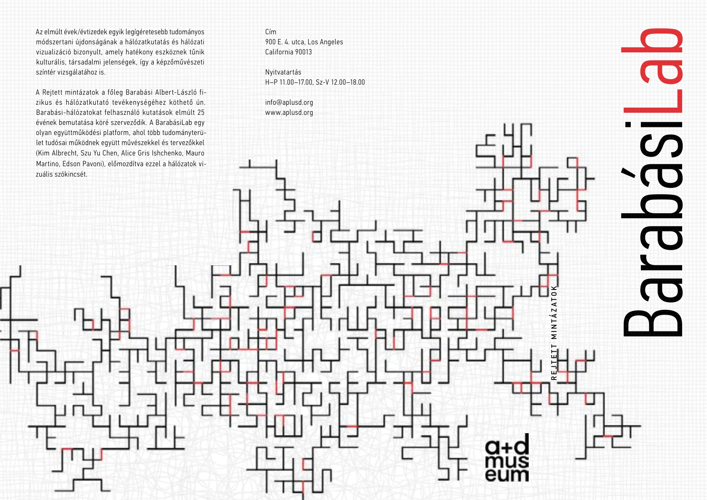
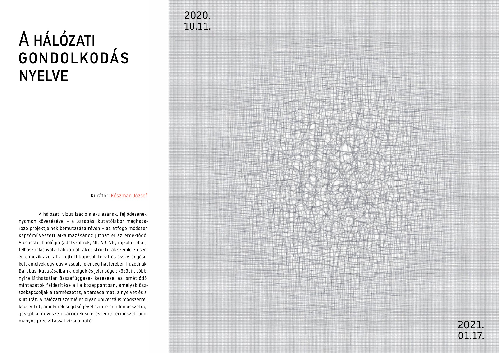

BarabásiLab
Hidden Patterns
Editorial design concept for a museum exhibition exploring the visual language of networks.
Making hidden connections visible.
A student project based on the BarabásiLab “Hidden Patterns” exhibition. The brief was to develop a two-page editorial piece that translates the idea of hidden connections and recurring patterns into a coherent visual system.
The exhibition explores how network visualization can reveal relationships and recurring structures that are otherwise difficult to see. The design translates this idea into a visual language built from interconnected lines, repetition and subtle interruptions of red.
Rather than illustrating networks literally, the graphic system becomes part of the page itself — moving between background texture, structure and visual emphasis.
Designing for clarity.
The publication combines expressive network graphics with relatively dense informational content. Careful attention was given to text flow, spacing and typographic rhythm to maintain a clean, balanced reading experience.
A restrained typographic hierarchy allows the exhibition information to remain readable while the surrounding visual system carries the conceptual character of the project.
From network structure to graphic language.
Fine repeated lines create a layered network that shifts between order and complexity. Black establishes the primary structure, while small red connections introduce rhythm and visual landmarks.
The same system is carried across both pages at different scales and densities, creating continuity without repeating the same composition.
A two-page editorial system.
The final student project brings typography, information hierarchy and network-inspired graphics into one coherent editorial system. The exhibition dates — 11 October 2020 to 17 January 2021 — are integrated directly into the composition as functional graphic elements.


“Hidden Patterns” presents network research and visualization connected to BarabásiLab and its collaborative work across science, art and design.
This portfolio piece is a student design exercise based on that exhibition and was not an official commission or publication for BarabásiLab.